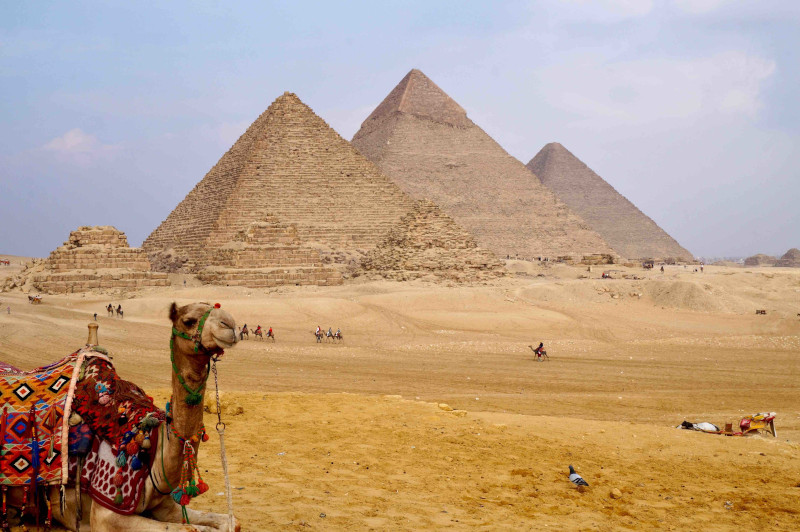

L'histoire des Pyramides de Gizeh
Les pyramides de Gizeh sont le témoignage éclatant de la grandeur de l'ancienne civilisation égyptienne. Construites il y a plus de 4500 ans, ces structures imposantes étaient à l'origine des tombeaux pour les pharaons, destinés à abriter leur corps et leurs richesses pour l'éternité. Les trois pyramides principales appartiennent aux pharaons Khéops, Khéphren et Mykérinos, tandis que le Sphinx, une statue colossale avec le corps d'un lion et la tête d'un pharaon, se tient en gardien légendaire devant ces monuments majestueux.
Comment Visiter les Pyramides
Pour vivre une expérience authentique des pyramides de Gizeh, il est recommandé de planifier une visite guidée avec un égyptologue qualifié. Les visiteurs peuvent explorer l'intérieur de certaines pyramides, notamment celle de Khéops, bien que l'accès soit limité et nécessite souvent des billets spéciaux. De nombreux circuits incluent également une visite du Sphinx et des temples voisins, offrant ainsi une perspective complète sur l'ensemble du complexe funéraire.
Construction des Pyramides
La construction des pyramides reste l'un des mystères les plus intrigants de l'histoire de l'humanité. Bien que les méthodes exactes utilisées par les anciens Égyptiens demeurent en grande partie inconnues, il est largement admis que ces monuments colossaux ont été érigés grâce à une combinaison de techniques de construction ingénieuses, de main-d'œuvre qualifiée et de planification minutieuse. Les blocs de pierre, certains pesant jusqu'à plusieurs tonnes, ont été taillés dans des carrières éloignées puis transportés et assemblés sur place avec une précision remarquable.
La Mystique des Pyramides
Les pyramides de Gizeh continuent de fasciner et d'inspirer le monde entier, suscitant des théories et des légendes qui alimentent encore aujourd'hui leur mystique. De la croyance en leur origine extraterrestre à la recherche incessante de chambres secrètes cachées dans leurs profondeurs, ces monuments ancestraux continuent de captiver l'imagination et d'attirer les chercheurs et les visiteurs du monde entier.
